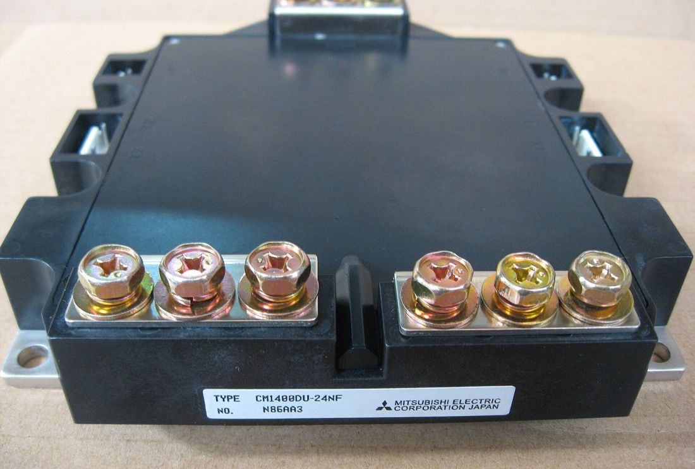
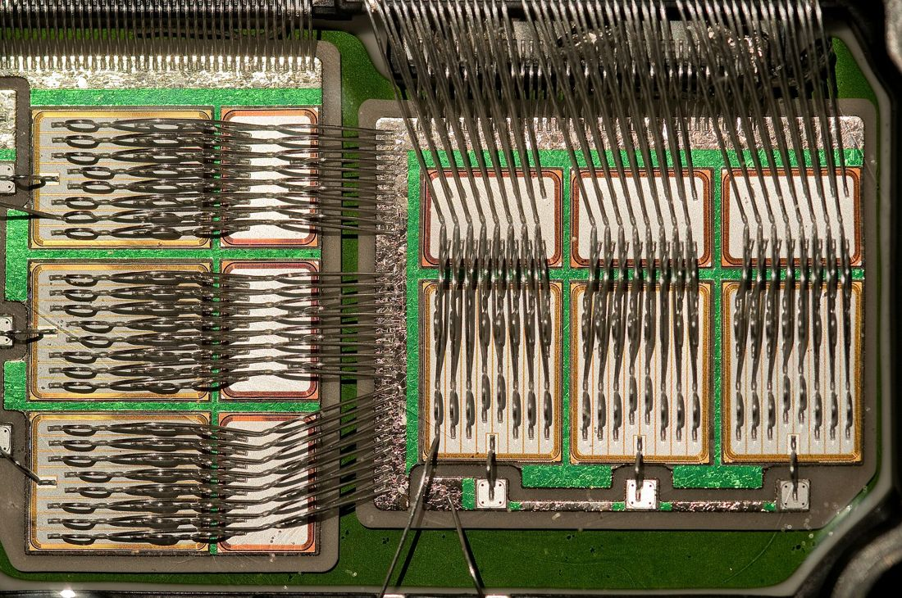
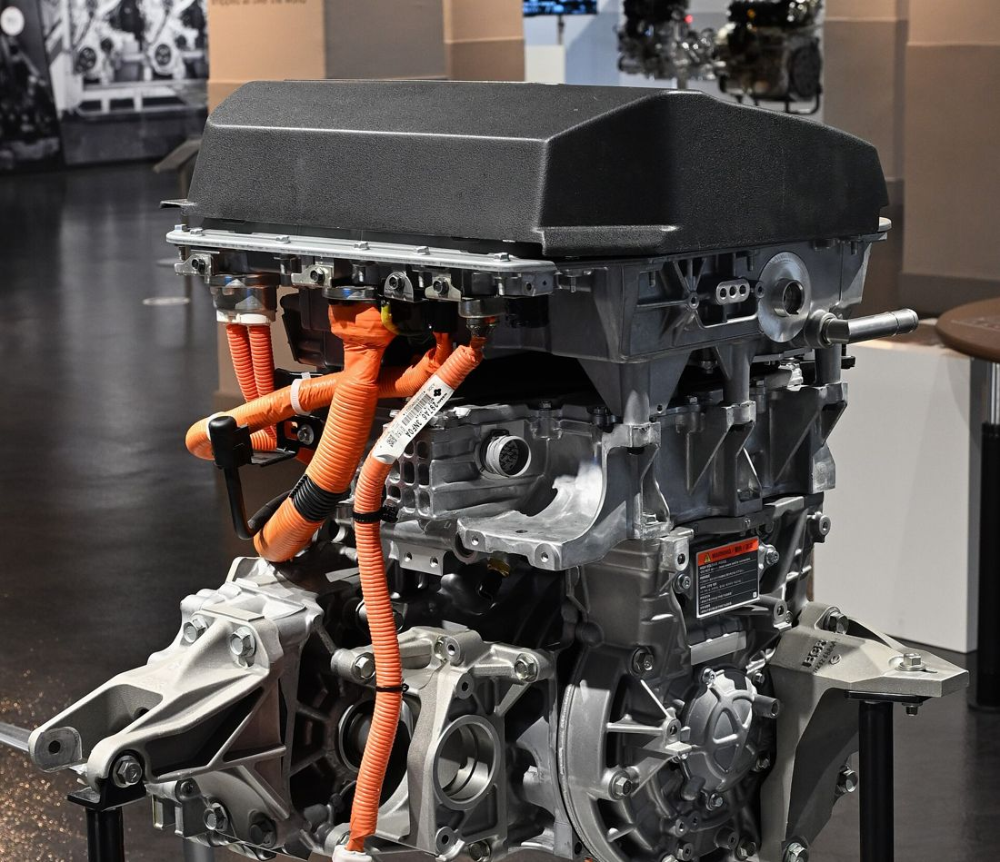
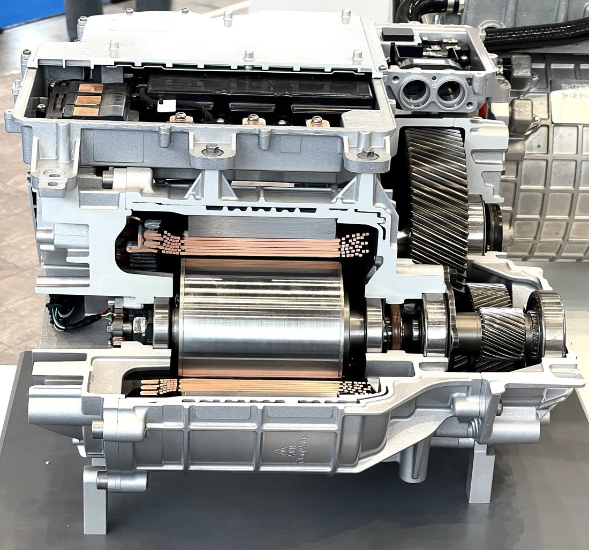

CHAPTER 05
電池（高壓 DC）→ 轉換器 → 馬達（三相 AC）
每節最後補充業界新技術：800V 高壓、SiC 碳化矽、雙面冷卻、高壓安全
重點報告 Mr.張 2026.10.20
按 → ← 或 空白鍵 換頁，也可以直接往下捲
總覽 · 圖5-1、5-13
電動車效能取決於電池、電控、電機「三電」之間的能量轉換與調配。第二條驅動路徑是本章主線。
01
公用電網 → AC-DC 充電器 → 動力電池（儲存高壓 DC）
02 · 本章主線
動力電池 → DC/DC → DC/AC 變頻器 → 驅動馬達 → 傳動裝置 → 車輪
03
動力電池 → DC/DC 轉換器 → 48V／12V 車用負載
04 · 反向
煞車時馬達變發電機 → 整流 → 回充電池
總覽
控制角色
統籌電池與電機控制器
控制角色
產生驅動功率元件的脈衝訊號
成本參考 · 圖5-13
車身底盤約 16–18%、驅動系統約 15–20%
三個推手
GTO → BJT → IGBT（1991 年）
8 位元以上，使馬達向量控制得以實現
調控送至馬達的功率，降低損失、提升效率
本章架構：轉換器有哪幾種（5-1）→ 用什麼元件做（5-2）→ 變頻器怎麼控制馬達（5-3）→ 高壓上電時如何保護它（5-4）。每節最後一頁（標 NEW）補充課本之後的業界新技術。
5-1 · 圖5-2
橋式電路切換開關｜電池高壓 DC 轉三相 AC 驅動馬達。最核心。
電磁互感｜升／降交流電壓；可變換電壓、電流、阻抗
二極體單向導通｜再生制動：馬達發出的 AC 整流後回充電池
週期性快速開／關｜高壓電池降壓約 14 V 充 12 V 鉛酸電池
5-1 · DC → AC · 圖5-3、5-4
2 顆開關 + 2 顆分壓電容，輸出 ±Vcc/2。
4 顆開關 T1–T4。T1、T4 導通 → 正電壓；T2、T3 導通 → 負電壓。交替切換即得交流。
6 顆開關 = 3 組半橋。線電壓 ±Vcc 方波；相電壓 ±Vcc/3、±2Vcc/3 階梯波；中性點 ±Vcc/6。
六步換相：每 60° 換一組開關，每相上臂或下臂輪流導通 180°。紅色 = 導通。磁場一次跳 60°，所以實際改用 SPWM（第 19 頁）讓它平順地轉。每顆開關另並聯續流二極體（圖中省略）。
5-1 · AC → DC · 圖5-5
電動車常用的整流電路；原理是二極體單向導通。
轉速愈快，三相電壓愈高
這就是再生制動的電能路徑
5-1 · DC → DC
觸發條件
電系電池 < 12 V 時，動力電池經斬波器輸出約
充電，供 ECU 與車身電器並充 12 V 鉛酸電池。
改變脈衝寬度或頻率，調整平均電壓
直流電動機速度控制、交換式電源供應
TL494 PWM 控制 IC + IRFB260N MOSFET 作開關
5-1 · 新趨勢NEW
斬波器把高壓降下來給 12 V 系統用；反過來，主電路這幾年正從 400V 往上升到 800V。四種轉換器都還在，只是全部要承受加倍的電壓。
下一步：電壓加倍，開關元件也要耐得住 → 800V 系統多半搭配 SiC（碳化矽）元件，見 5-2 最後兩頁。
來源：Charged EVs，Hyundai E-GMP 發表、Porsche Newsroom，Macan Electric、Lucid Motors
5-2 功率半導體元件
10 kW 以下
MOSFET
快速、高頻
中、大功率
IGBT
電動車驅動馬達的主力
5-2 · 2.1
電流驅動｜承受不了高壓大電流，近期鮮少使用
快速、高頻｜中低功率電力轉換、小功率高頻場合
結合 BJT 與 MOSFET 優點｜600 A、約 20 kHz｜驅動馬達主力
正脈衝導通、負脈衝關斷｜歷史元件，火車 VVVF 牽引變頻器
5-2 · 表5-1～5-3 合併
| 比較項目 | BJT | MOSFET | IGBT |
|---|---|---|---|
| 導通電阻 | 小 | 大 | 小 |
| 驅動電流 | 大 | 小 | 小 |
| 導通／截止時間 | — | 3 μs／10 μs | 6 μs／14 μs |
| 工作電壓 | — | 100 V 以下 | 300 V 以上 |
| 工作電流 | — | 300 A 以下 | 可達 600 A |
| 工作頻率 | — | 可達 20 kHz 以上 | 20 kHz 以下 |
μs 開關時間為課本數值；實際元件多為數十到數百 ns 級，考試照課本作答即可。表中 MOSFET 指矽（Si）MOSFET，碳化矽 MOSFET 不受 100 V 限制，見第 15 頁。
5-2 · 一句話記住 IGBT
輸入端
電壓驅動、驅動電流小
輸出端
導通電阻低、耐高壓大電流
代價是切換較慢，但對馬達控制已綽綽有餘。MOSFET 功耗較小；兩者驅動電路相同、可互換。


5-2 · 2.3 · 圖5-8～5-10
閘極 G 控制 MOSFET，MOSFET 再驅動 BJT；三腳 G 閘極、C 集極、E 射極。
VGE 為正且 > VGE(th) → 形成溝道 → IC 隨 VGE 上升
閘射極加反向電壓或不加訊號 → 溝道消失
高輸入阻抗 · 快速切換 · 耐高壓大電流 · 電壓驅動
TON = 開通延遲 td(on) + 電流上升 tr
TOFF = 關斷延遲 td(off) + 電流下降 tfi1、tfi2（後段為拖尾電流）
5-2 · 2.4 · 圖5-11、5-12
| 步驟 | Power MOSFET | IGBT |
|---|---|---|
| 1. 辨腳 | diode 檔決定 D、S 極 | diode 檔決定 C、E 極 |
| 2. Ω 檔 | G-S 呈電容效應 | G-E、G-C 皆為 ∞ |
| 3. 加正偏 | G+ S− → D-S 低電阻 | G→E 正偏 → C-E 導通（約 0.004 Ω） |
| 4. 歸零 | G− S+ → D-S 截止 | 手指觸摸三腳放電 → 回到開路 |
5-2 · 新元件NEW
前面說 MOSFET 只到 100 V、10 kW 以下，那是矽（Si）做的 MOSFET。改用碳化矽（SiC）材料後，MOSFET 也能耐上千伏、做大功率，開始取代 IGBT。
車用常見 650–1200 V 等級，直接對應 800V 平台
熱導率約為 Si 的 3 倍；最高結溫從 150°C 提升到 175–200°C
可用更高切換頻率，電容、電感等被動元件跟著縮小，逆變器更輕更小
沒有 IGBT 的拖尾電流（第 13 頁），單顆元件開關能量約為 IGBT 的 1/6；整台逆變器總損耗約少 30–40%
瓶頸在封裝：SiC 晶片本身耐得住 300°C 以上，但銲錫、封裝塑料、打線（Wire bonding）在 200°C 以上就會熔化或老化斷裂 → 所以下一頁從散熱下手。
來源：DigiKey eMag（熱導率、結溫）、Tiwari，SiC MOSFETs for future motor drive applications（NTNU）、STMicroelectronics SiC 技術簡報
5-2 · 新散熱NEW
封裝怕熱，就要把熱更快帶走。晶片（IGBT 與二極體）正反兩側同時焊上絕緣導熱基板（覆銅陶瓷基板 DBC／AMB）與散熱器，熱量雙向傳導；IGBT 與 SiC 模組都適用。
| 傳統單面冷卻 | 雙面冷卻 | |
|---|---|---|
| 散熱路徑 | 僅晶片背面向下傳導 | 正面與背面同時傳導 |
| 內部連接 | 晶片正面用鋁打線（Wire Bonding） | 兩面以金屬墊片與導熱基板焊接 |
| 熱阻 Rthjc | 基準 100% | 約降低 23–40% |
| 功率密度 | 較低，受限單面散熱 | 較高，逆變器體積與重量大幅縮小 |
熱阻降幅依各研究實測：SAE 2017-01-2456（−23%）、IEEE 平面封裝模組（−26.7%）、Fraunhofer IZM（−40%）
5-3 · 變頻器在電動車上的應用
5-3 · 圖5-14
6 顆 IGBT／MOSFET（上臂 1、3、5，下臂 4、6、2），每顆並聯續流二極體。
輸出三相：幅值相等、頻率相等、相位差 120°，對繞組作正弦激磁。
控制輸入：電池、煞車／加速踏板、溫度、速度、電流、轉子位置
感應馬達轉速
n 轉速 rpm · f 頻率 · P 極對數 · s 轉差率
五種調速：改變 P、改變 f（變頻器，最主要）、改變 s、改變電壓、改變轉子電阻（僅繞線式，少用）
5-3 · 3.4 · 圖5-15、5-16
上：調製波（正弦）與三角載波比較；下：輸出脈衝，虛線是它的平均值（馬達實際感受到的電壓）。拉滑桿看輸出幅值與頻率怎麼跟著變。
每段脈衝面積 = 對應區間正弦波面積。改變調製波的頻率與幅值 → 調整輸出電壓的頻率、相位、幅值。
正半週只有 0 / +V，負半週只有 0 / −V
正弦波與三角載波比較，輸出在 +Vd 與 −Vd 間切換
5-3 · 實例 · 圖5-17～5-19

馬達控制器、驅動器、平流電容器、2 個電流感知器、冷卻液溫度感知器、電源模組（6 顆 IGBT）
解析器（轉子位置）+ 電流感知器 → 馬達控制器 → 驅動器 → IGBT
扭力 ∝ 電流；轉速由三相電流頻率決定。依馬達溫度限制輸出扭力。
減速時馬達短暫作發電機；變頻器內的二極體把 AC 整流成 DC 回充鋰電池。
Van = −2Vdc/3 Vbn = Vcn = +Vdc/3
5-3 · 新趨勢NEW
前面的三相橋式、SPWM 控制原理都不變；改變的是開關元件、電壓和整合方式。
見第 15 頁
6 顆 IGBT 換成 SiC MOSFET：耐高壓、損耗低、可高頻切換
見第 8 頁
元件耐得住，主電壓才能加倍：電流減半、線束變細、快充更快
本頁新增
馬達、變頻器、減速器甚至 BMS 整合在同一殼體：外部高壓線束更少，冷卻與空間利用更好
同一顆電池，SiC 變頻器比 Si IGBT 多跑約 5–7%；次世代 SiC 上看 10%。
Tesla Model 3（2018，第一款量產 SiC 變頻器）、Porsche Macan Electric（800V 平台 + SiC 脈衝逆變器）

來源：Autocar，Infineon 訪談（+7%、次世代 10%）、Padova 大學研究（+5%）、IDTechEx，Tesla SiC 變頻器、Porsche Newsroom
5-4 預充電路 · 圖5-20、5-22
紅色支路是預充路徑（KP 串 RP），與主繼電器 K+ 並聯。示意數值：VB 360 V、C 1000 μF（Leaf 實際規格 1000 μF / 500 V）、RP 100 Ω。
大電容 C 冷啟動時約 0 V，直接接通 = 瞬間短路（迴路 ≪ 20 mΩ）。依 i = C·dv/dt 產生湧浪電流，打壞 IGBT 與繼電器。
5-4 · 實例 · 圖5-21、5-23～5-25
NISSAN LEAF
三顆繼電器：主電源 1（K+）、主電源 2（K−）、預充（KP），全由 VCM 控制；預充電路在電池組的電池連接盒。
電容充滿 → 變頻器送「高壓準備完成」給 VCM → 閉合主繼電器 1、斷開預充繼電器。
TOYOTA ALTIS 油電
SMRB = B+ 主 SMRG = B− 主 SMRP = 預充
SMRB → SMRP 預充約 500 ms → SMRG → SMRP 斷
先斷 SMRG（B−）→ 再斷 SMRB（B+）→ SMRP 動作一次，偵測接點黏滯
5-4 · 新趨勢NEW
上一頁 Altis 下電時要讓 SMRP 動作一次，就是為了偵測機械接點黏死。新技術從三個地方改善這條上電／斷電路徑。
機械繼電器長期大電流易「電弧燒蝕」或接點黏死。改用半導體開關取代金屬接點，沒有機械磨耗，反應達微秒級。
由安全氣囊控制器或 BMS 觸發：嚴重碰撞或短路時引爆微型火藥，不到 1 毫秒切斷高壓電池，比傳統熔斷保險絲快得多。
不再只靠會發熱的預充電阻，改用小型 DC-DC 轉換器主動把電容電壓拉到目標值：速度更快，連續啟動也不會讓電阻過熱燒毀。
對照前兩頁：SSC 取代 K+／K−、SMR 這類機械繼電器；主動式預充取代 RP 預充電阻；Pyro-fuse 是額外加上的最後一道保護。
來源：Autoliv Pyro Safety Switch 型錄（< 1 ms）、Automotive World，Autoliv × Mersen
考點速記
必背（課本）
· 變頻器 = 逆變器（DC→AC）；整流器反向
· 導通電阻：MOSFET 大、IGBT 小
· 驅動電流：BJT 大，其餘小
· Altis 下電：先 B− 後 B+
· 勘誤：第 53 頁應為 i = C·dv/dt
延伸（業界新技術，非課本考點）